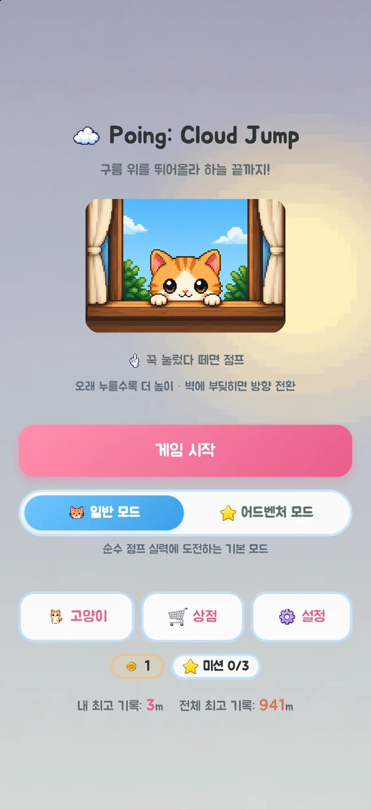

꾹 눌렀다 떼면 점프
오래 누를수록 더 높이 뛰고, 벽에 부딪히면 방향이 바뀌어요.
Poing은 구름 위를 뛰어오르는 고양이 점프 게임이에요. 짧게 한 판씩 즐기면서 내 최고 기록을 넘어 보세요.
무료로 즐길 수 있고, 게임 중 광고가 표시될 수 있어요.

이렇게 즐겨요
오래 누를수록 더 높이 뛰고, 벽에 부딪히면 방향이 바뀌어요.
순수한 점프 실력에 도전하는 일반 모드와 어드벤처 모드 중에 골라 즐겨요. 모드마다 내 최고 기록이 따로 남아요.
전체 최고 기록에 도전하고 미션을 깨 보세요. 모은 코인은 상점과 강화에 쓸 수 있어요. Game Center나 Google Play 게임즈로 순위표와 업적도 즐길 수 있어요.